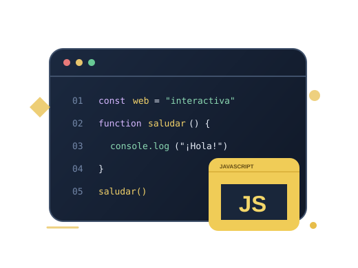

Dale lógica
a la web.
El lenguaje que convierte páginas estáticas en experiencias interactivas. Respondé a eventos, manipulá el contenido, procesá datos y conectá tu web con el mundo.

Temas de JavaScript
Fundamentos
Cómo funciona JavaScript, su sintaxis y dónde ejecutarlo.
Explorar categoría → 02 / DATOSVariables y tipos
Declarar variables, conocer tipos y convertir valores.
Explorar categoría → 03 / LÓGICAOperadores y condiciones
Comparar valores, combinar condiciones y tomar decisiones.
Explorar categoría → 04 / REPETICIÓNBucles e iteraciones
Repetir instrucciones con for, while y otros recorridos.
Explorar categoría → 05 / REUTILIZARFunciones
Crear bloques reutilizables, recibir parámetros y devolver valores.
Explorar categoría → 06 / ESTRUCTURASArrays y objetos
Organizar colecciones, propiedades y estructuras de datos.
Explorar categoría → 07 / DOCUMENTODOM
Acceder al HTML, recorrerlo y modificar sus elementos.
Explorar categoría → 08 / INTERACCIÓNEventos
Escuchar clics, teclas, formularios y otras acciones.
Explorar categoría → 09 / TIEMPOAsincronía
Comprender callbacks, promesas, async/await y Event Loop.
Explorar categoría → 10 / REDFetch y APIs
Solicitar datos, interpretar respuestas y trabajar con HTTP.
Explorar categoría → 11 / PERSISTENCIAAlmacenamiento
Guardar y recuperar información en el navegador.
Explorar categoría → 12 / PLATAFORMAAPIs del navegador y herramientas
Explorar temporizadores, observers, módulos, fechas y más.
Explorar categoría →Ruta de aprendizaje JavaScript
Seguí este orden recomendado. Cada etapa se apoya en los conocimientos de la anterior; podés volver a cualquier categoría cuando necesites consultar algo.
Aprendé el lenguaje
Construí las bases para escribir programas y resolver problemas.
Controlá la página
Conectá JavaScript con HTML y respondé a las acciones del usuario.
Trabajá con datos y tiempo
Aprendé a esperar operaciones, consultar servicios y guardar información.
Conocé el entorno
Ampliá tus herramientas con las capacidades del navegador y del lenguaje.
Un lenguaje, varias piezas
JavaScript combina el núcleo del lenguaje con las APIs que ofrece cada entorno. Estas familias te ayudan a ubicar qué estás usando.
¿En qué navegadores funciona?
JavaScript funciona en prácticamente todos los navegadores actuales. Lo que puede variar es el soporte de una característica nueva o de una API específica; por eso conviene comprobar cada función antes de usarla.
La barra es orientativa, no un porcentaje de compatibilidad medido. No existe un único “JavaScript funciona al 100%”: ECMAScript y las APIs del navegador evolucionan por separado. En versiones antiguas pueden faltar sintaxis o APIs; Internet Explorer ya no recibe soporte moderno. Consultá la compatibilidad de cada característica en MDN o Can I use.
¿Qué es JavaScript?
JavaScript es un lenguaje de programación estandarizado como ECMAScript. En la web trabaja junto con HTML y CSS: HTML define el contenido, CSS su presentación y JavaScript agrega comportamiento e interacción.
Pequeñas pruebas de código
const nombre = "Akamini";
const mensaje = "¡Hola, " + nombre + "!";
document.querySelector("#demoOutput").textContent = mensaje;El código modifica el contenido de un elemento HTML.
Tutoriales y cursos completos
Soy Dalto
Curso de JavaScript desde cero — Nivel Junior. Fundamentos, arrays, funciones, DOM y ejercicios.
Ver curso ↗ CURSO INTERACTIVO⌘CampoCode
JavaScript desde cero con apuntes, editor integrado, consola y ejercicios autocorregibles.
Ir al curso ↗ BOOTCAMP GRATUITOJSJSCamp · midudev
Clases de JavaScript, DOM, eventos, Fetch, JSON y módulos dentro de una ruta Full Stack.
Explorar clases ↗YOUTUBE · BÚSQUEDA▶Denz Dev
Resultados de JavaScript para este nombre en YouTube. Verificá el canal antes de seguir una serie.
Buscar videos ↗Los cursos y sitios enlazados son recursos externos e independientes de WebDev Book. Se abren en una pestaña nueva.